AgileX NERO
7축 로봇팔
안전 수칙과 사양, 전기 · 기계 설치, CAN 연결과 첫 전원 투입, Wi-Fi · 이더넷 접속, 웹 제어 화면의 동작 제어 · 드래그 티칭 · 협업 제어 · 영점 설정 · 시스템 설정, 업그레이드와 유지 보수까지 AgileX 공식 사용 설명서를 한국어로 옮겼습니다.

이 설명서에 대하여
| 로봇 | AgileX NERO 7자유도 로봇팔 |
| 근거 문서 | AgileX NERO USER MANUAL V1.0.0 (agilexsupport.yuque.com, 2026-03-23 판) · WeGo Nero Operation Manual (2026-10-01, 한국어 표현) |
| 함께 보는 책 | WeGo NERO Studio 사용 가이드 (NERO 원격조작 · 데이터 수집 소프트웨어) |
| 판 | 한국어판 · 2026.11.17 |
| 문의 | go.support@wego-robotics.com |
본문은 AgileX 공식 사용 설명서를 옮긴 것이며, 장 순서는 WeGo 설명서 형식에 맞췄습니다 (안전 수칙을 2장으로). 원문의 '6.3 다관절 손' 절은 내용이 비어 있어 옮기지 않았습니다. Wi-Fi 이름 · 비밀번호, 웹 계정과 IP 주소는 AgileX 문서에 적힌 공장 기본값입니다. 로봇팔을 여러 사람이 쓰는 네트워크에 두기 전에 핫스팟 비밀번호를 바꾸십시오.
© WeGo Robotics. AgileX, NERO는 AgileX Robotics의 상표입니다. 표지의 NERO 이미지는 공개 URDF 메시로 렌더링한 것이고, 본문 그림은 AgileX 사용 설명서의 그림입니다.
목차
- 01로봇팔 개요
- 02중요 안전 수칙
- 03기본 소개와 설치
- 04CAN 연결과 전원 투입
- 05로봇팔 접속
- 06웹 제어 화면
- 07사용자 제어 영역
- 08네트워크 설정
- 09업그레이드
- 102차 개발과 CAN 프로토콜
- 11유지 보수와 비상 대응
- 부록치수 도면
로봇팔 개요
NERO는 교육 · 연구, 소비자용 응용, 산업 자동화를 위해 설계된 7자유도 로봇팔입니다. 가반 하중은 3 kg이며, 휴머노이드 로봇 · 자동 조립 · 자동 운반 같은 연구와 산업 응용에 알맞습니다.
관절 일곱 개로 폭넓고 유연하게 움직이며, 정밀도와 반복성이 높습니다. 모듈식 설계로 정비와 업그레이드가 쉽고, 프로그래밍과 조작이 쉬운 직관적인 사용자 화면을 갖춰, 전문가가 아니어도 빠르게 시작할 수 있습니다. 과학 연구 · 교육 · 자동차 제조 · 전자 조립 · 식품 가공 · 실험실 자동화 · 의료 장비 조작 같은 분야에 널리 쓸 수 있습니다. 문서
구성품 문서
| 이름 | 수량 |
|---|---|
| 7자유도 로봇팔 | 1 |
| USB-to-CAN 모듈 | 1 |
| 전원 어댑터 (어댑터 + 전원 코드) | 1 |
| 마이크로 USB 케이블 | 1 |
| 베이스 고정 나사 | 4 |
| 베이스 고정 렌치 | 1 |
성능 사양 문서
| 항목 | 사양 |
|---|---|
| 자유도 | 7 |
| 가반 하중 | 3 kg |
| 무게 | 4.8 kg |
| 반복 위치 정밀도 | ±0.1 mm |
| 작업 반경 | 580 mm |
| 정격 전압 | DC 24 V |
| 소비 전력 | 최대 ≤ 150 W · 종합 ≤ 60 W |
| 재질 | 알루미늄 합금 프레임 · 플라스틱 외장 |
| 컨트롤러 | 내장형 |
| 통신 방식 | CAN · HTTP · TCP |
| 제어 방식 | 드래그 티칭 · 오프라인 궤적 · API · 호스트 소프트웨어 티칭 |
| 외부 인터페이스 | 전원 × 1 · CAN × 1 · 이더넷 × 1 |
| 베이스 고정 치수 | 70 mm × 70 mm · M5 × 4 |
| 작동 환경 | 온도 −20 ~ 50 °C · 습도 25 ~ 85 % (결로 없음) |
| 소음 | < 60 dB |
| 설치 방식 | 바닥 · 측면 · 천장(거꾸로) 설치. AgileX 전 제품과 호환 |
| 관절 동작 범위 | J1 −157° ~ 157° · J2 −15° ~ 190° · J3 −160° ~ 160° · J4 −60° ~ 125° · J5 −160° ~ 160° · J6 −43° ~ 58° · J7 −90° ~ 90° |
| 관절 최대 속도 | J1 · J2 · J3 180°/s · J4 · J5 · J6 · J7 225°/s |
위 값은 AgileX가 정해진 시험 환경에서 측정한 결과입니다. 환경과 사용 조건에 따라 달라질 수 있습니다.
중요 안전 수칙
장치를 처음 쓰기 전, 특히 처음 전원을 넣기 전에 반드시 읽고 이해해야 하는 안전 정보입니다. 이 설명서의 조립 지침을 모두 따르고, 경고 표시가 붙은 글에 특히 주의하십시오. 문서
⚠ 표시는 피하지 않으면 사람이 다치거나 재산 피해, 심각한 장비 손상이 생길 수 있는 위험한 상황을 뜻합니다.
AgileX Robotics는 손상 · 변경 · 개조된 로봇팔로 생긴 손해에 책임지지 않으며, 프로그램 오류나 비표준 조작으로 로봇팔이나 다른 장비에 생긴 손해에도 책임지지 않습니다.
책임의 한계
이 로봇팔을 쓰면 이 사용 설명서와 안전 정보의 모든 조건과 내용을 읽고 이해하고 받아들인 것으로 봅니다. 사용자는 자신의 행동과 그 결과에 모든 책임을 지며, 로봇팔을 정당한 목적으로만 쓰고 이 조건과 AgileX Robotics의 관련 정책 · 지침을 따르는 데 동의합니다. 운용 중에는 사용 설명서와 안전 정보를 포함하되 이에 한정되지 않는 모든 요구 사항을 엄격히 지키십시오. 사용 지침을 지키지 않거나 피할 수 없는 요인으로 생긴 인명 피해 · 사고 · 재산 피해 · 법적 분쟁 · 이해 충돌에 AgileX Robotics는 책임지지 않습니다. 이 로봇팔은 만 18세 미만이거나 완전한 행위 능력이 없는 사람이 쓰기에 적합하지 않습니다. 이런 사람이 제품에 접근하지 못하게 하고, 이들이 있는 곳에서 조작할 때는 더욱 주의하십시오.
이 설명서는 로봇팔 응용 시스템 전체의 설계 · 설치 · 운용이나, 시스템 안전에 영향을 줄 수 있는 모든 주변 장비를 다루지 않습니다. 전체 시스템의 설계와 사용은 로봇팔을 설치하는 나라의 표준과 규정이 정한 안전 요구 사항을 따라야 합니다. 통합 업체와 최종 사용자는 관련 규정과 법을 지키고, 로봇팔 응용 시스템 전체에 중대한 위험이 없도록 할 책임이 있습니다. 이 책임에는 다음 항목이 포함되며, 이에 한정되지 않습니다.
유효성과 책임
- 로봇팔 시스템 전체의 위험성 평가를 합니다.
- 위험성 평가에서 정한 기계용 안전장치를 추가로 갖춥니다.
- 소프트웨어와 하드웨어를 포함한 로봇팔 시스템 전체의 설계 · 설치가 정확한지 확인합니다.
- 관련 규정과 법에 따라 로봇팔과 관련된 모든 기능의 안전성을 평가하여, 실제 응용에서 중대한 위험이 없도록 합니다.
- 장비를 조작하기 전에 잠재적인 안전 위험을 알아 둡니다.
- 사용자가 어떤 안전 조치도 바꾸지 않게 합니다.
- 위험성 평가서와 이 설명서를 포함한 모든 문서를 기술 파일로 모아 둡니다.
환경
- 처음 쓰기 전에 이 설명서를 읽고 기본 조작과 사양을 이해하십시오.
- 비교적 트인 곳에서 쓰십시오. 로봇팔에는 자동 장애물 회피 기능이나 감지 센서가 없습니다.
- 주위 온도가 −20 ~ 50 °C인 곳에서 쓰십시오.
- 방진 · 방수 등급은 별도 주문이 아니면 IP22입니다.
점검
- 로봇팔에 눈에 띄는 이상이 없는지 확인하십시오.
- 쓰는 동안 모든 배선이 단단히 연결되어 있는지 확인하십시오.
조작
- 작동 중에는 로봇팔 주변을 비워 두십시오.
- 로봇팔이 보이는 곳에서 조작하십시오.
- 최대 가반 하중은 3 kg입니다. 하중이 이를 넘지 않게 하십시오.
- 이상이 생기면 2차 손상을 막기 위해 즉시 사용을 멈추십시오.
- 장치가 고장 나면 기술 담당자에게 연락하고, 허가 없이 직접 고치지 마십시오.
- IP 등급에 맞는 환경에서 쓰십시오.
사용 경고 ⚠
- 로봇팔과 공구 · 엔드 이펙터가 언제나 바르게, 단단히 고정되어 있어야 합니다.
- 로봇팔 작업 공간에 들어가야 할 때는 보안경과 보호구를 착용하십시오.
- 로봇팔이 막힘없이 움직일 공간을 확보하십시오.
- 위험성 평가에서 정한 안전 조치를 갖추십시오.
- 헐렁한 옷을 입고 조작하지 말고, 긴 머리는 묶으십시오.
- 손상되었거나 이상 징후가 있는 로봇팔은 쓰지 마십시오.
- 호스트 소프트웨어에 오류 메시지가 뜨면 즉시 비상 정지하고 기술 담당자에게 연락하십시오.
- 작동 중이거나 작동을 시작하기 전에는 머리 · 얼굴 등 몸을 로봇팔이 닿는 범위 밖에 두십시오.
- 로봇팔을 개조하지 마십시오. 개조는 예측할 수 없는 위험을 만듭니다.
- 로봇팔을 영구 자기장에 두지 마십시오. 강한 자기장은 로봇팔을 손상시킬 수 있습니다.
- 로봇팔은 작동 중 열이 납니다. 작동 중이나 멈춘 직후에는 만지지 마십시오. 전원을 끊고 한 시간 기다려 완전히 식히십시오.
- 다른 기계를 연결하면 위험이 커지거나 새로 생길 수 있습니다. 설치 전체의 위험성 평가를 하십시오. 위험성 평가 결과에 따라 기능 안전 수준이 달라질 수 있으므로, 서로 다른 안전 · 비상 정지 성능 수준이 필요하면 언제나 가장 높은 수준을 고르십시오. 설치에 쓰는 모든 장비의 설명서를 읽고 이해하십시오.
사용 전 주의 사항
- 관절 영점 설정: 관절 영점은 로봇팔이 기본 수직 직립 자세일 때 설정해야 합니다. 그렇지 않으면 티칭 모드와 리더 · 팔로워 모드의 중력 보정이 제대로 동작하지 않을 수 있습니다.
- 모드 관리: 시스템은 상태 기계로 모드를 관리합니다. 티칭 모드, 궤적 모드, 리더 · 팔로워(협업 제어) 모드, 웹 제어 모드는 서로 독립적입니다. 예를 들어 궤적 제어 중에 속도를 바꾸려면 먼저 WEB 버튼을 눌러 웹 제어 모드로 바꿔야 합니다. 모드를 바꾸면 궤적 동작이 멈추고, 그 뒤에 속도를 설정할 수 있습니다.
- 자동 영점 설정: 모터가 먼저 기계적 한계 위치까지 갔다가 올바른 위치로 돌아옵니다. 이 과정에서 로봇팔을 막거나 건드리지 마십시오.
- J6 교정: J6의 영점을 수동이나 자동으로 설정하면 이어서 교정 과정이 실행됩니다. 이 과정을 막지 마십시오.
- 리더 · 팔로워 연결: 리더 팔과 팔로워 팔을 연결할 때 두 팔의 자세를 가깝게 맞춰 두십시오. 그렇지 않으면 팔로워 팔이 리더 팔을 따라가려고 빠르게 움직여 위험합니다.
- 그리퍼 리더 · 팔로워 제어: 그리퍼를 리더 · 팔로워 방식으로 제어하려면 사용자 정의 컨트롤러 칸에서 "Gripper" 형식을 고르고, 그리퍼를 활성화한 뒤 조작하십시오.
- 기구학 제어: 기구학 제어 중에는 J2 · J3 · J4 · J5를 될 수 있으면 0 위치에 두지 마십시오. 그래야 로봇팔이 특이 자세에 들어갈 위험이 줄어듭니다.
- 기존 그리퍼 호환: 예전에 산 PiPER 그리퍼를 NERO에 쓰는 경우(새로 산 경우는 해당 없음), 처음 쓰기 전에 《Nero Gripper ID Modification Guide》에 따라 그리퍼 ID를 바꿔야 합니다. 바꾸지 않으면 ID가 겹쳐 기구학과 중력 보정에 심각한 영향을 줍니다.
- 설치 방향 정의: 측면 설치는 기본 영점 자세에서 이더넷 포트가 아래를 향하게 설치하는 것이고, 천장 설치는 로봇팔을 완전히 거꾸로 설치하는 것입니다.
기본 소개와 설치
NERO는 7자유도 로봇팔이며, 엔드 이펙터 가반 하중은 3 kg입니다. 경량 설계로 높은 가반 하중을 유지하면서도 빠르게 움직이며, 체화 지능(embodied AI) 연구에서 실제 환경 데이터를 모으는 데 널리 쓸 수 있습니다. 문서
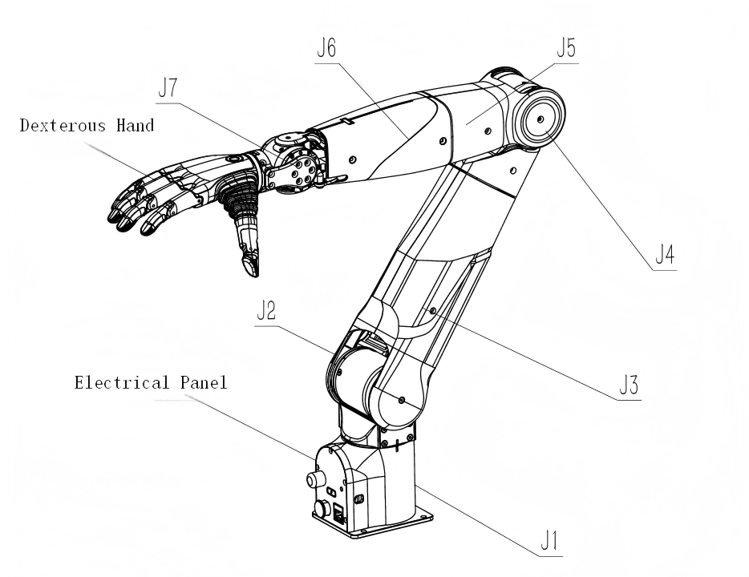
전기 인터페이스 문서
전기 패널
베이스 패널에는 항공 커넥터 · 표준 이더넷 포트 · Wi-Fi 안테나 · 상태 표시등이 있습니다. 항공 커넥터에는 선이 두 묶음 있습니다. 한 묶음은 로봇팔에 전원을 공급하고, 다른 묶음은 상위 시스템과 로봇팔 사이의 CAN 통신에 씁니다.

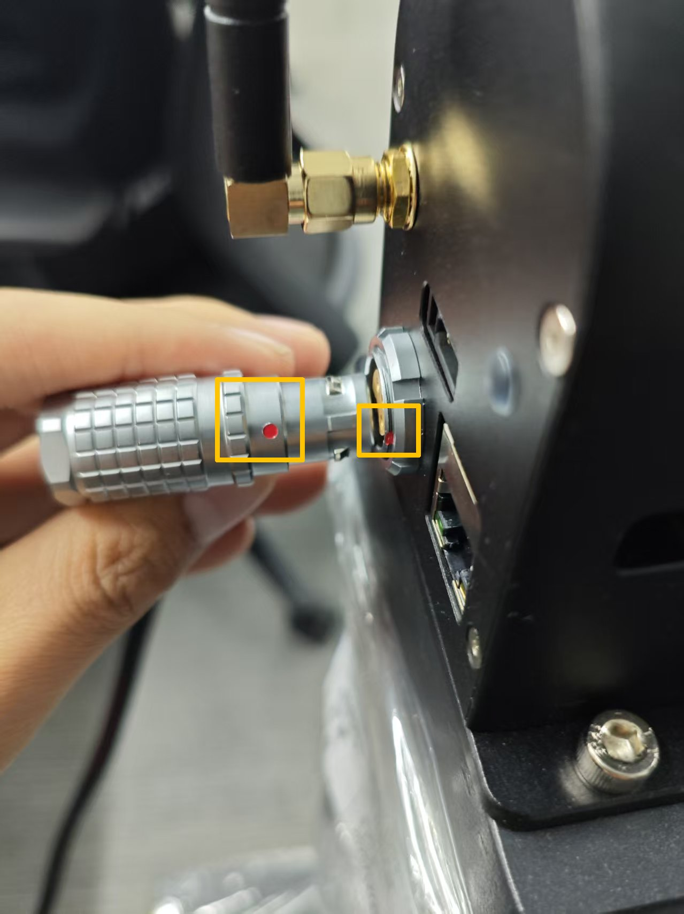
베이스 패널의 빨간 점과 케이블의 빨간 점을 맞춥니다. 커넥터에서 무늬가 있는 부분은 힘을 주면 뒤로 밀립니다. 끼울 때는 빨간 점을 맞춰 곧게 밀어 넣고, 뺄 때는 무늬가 있는 부분을 누른 채 당깁니다.
엔드 이펙터 연결
끝 관절에는 XT30 2+2 인터페이스가 있으며, 전원 · CAN 핀 배치는 아래 그림과 같습니다. 전압은 24 V, 최대 전류는 2 A입니다.

엔드 이펙터 CAN 통신은 AgileX 장치만 지원합니다. 다른 CAN 장치를 허가 없이 연결하면 통제할 수 없는 손상이 생길 수 있으므로 절대 연결하지 마십시오.
작업 공간과 가반 하중 문서
아래 기구학 그림은 로봇팔의 동작 공간 경계와 관절 동작 범위를 보여 줍니다. 작업대 배치 · 궤적 계획 · 안전 조치 설계의 기준으로 쓰십시오.

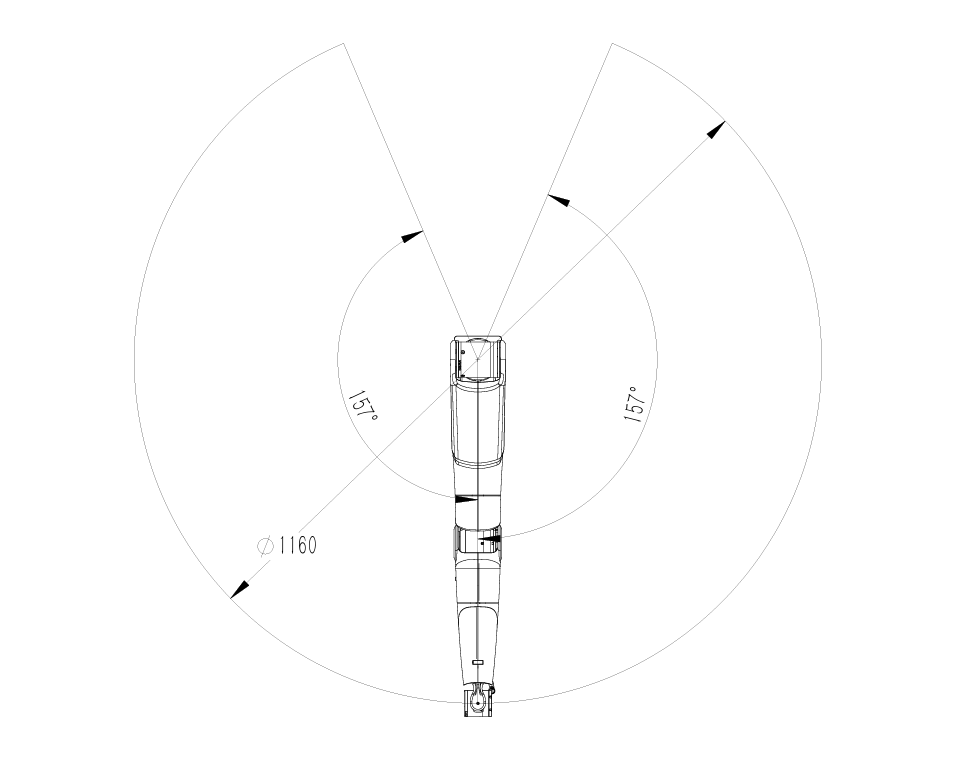
기계 설치 문서
베이스 고정
베이스는 나사로 고정합니다. 베이스에 M5 관통 나사 구멍 네 개가 있고, 부속품 봉투에 M5 나사 네 개와 육각 공구가 들어 있습니다. 구멍 간격은 70 mm입니다. 이동 장비나 고정 플랫폼용 어댑터를 설계할 때는 구멍을 70 mm 간격으로 내면 됩니다.
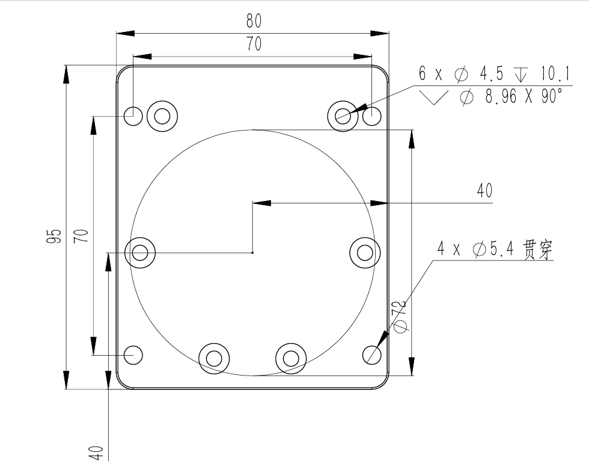
다관절 손 설치
- 로봇팔을 설치대에 고정합니다.다관절 손과 플랜지 부속품(플랜지와 볼트)을 꺼냅니다.
- 플랜지를 설치합니다.
- M3 × 6 육각 렌치 볼트(접시머리) 6개로 배플을 모터 출력축에 고정합니다.
- M3 × 8 육각 렌치 볼트(접시머리) 4개로 배플 양쪽에 플랜지를 고정합니다.
- 다관절 손을 플랜지에 끼웁니다 (케이블 출구를 플랜지 틈에 맞춥니다).
- M3 × 6 나사 4개로 다관절 손을 플랜지에 고정합니다.
- 케이블을 연결합니다.부속품 봉투의 전원 · 통신 케이블을 J6 끝 인터페이스와 그리퍼 티치 펜던트의 인터페이스에 연결합니다.
- 전원과 CAN을 연결합니다.항공 케이블을 로봇팔에 연결하고, USB-to-CAN 모듈을 항공 케이블에 연결합니다(노란색 선은 CAN-H, 파란색 선은 CAN-L). 모듈의 USB 케이블을 컴퓨터에 꽂고, 항공 케이블을 어댑터에 연결한 뒤 어댑터 전원을 넣습니다.
책상 설치 모듈
책상 설치 모듈은 기본 구성에 들어 있지 않은 선택 부속품입니다. 치수는 아래 그림과 같습니다. 로봇팔을 쓰기 전에 모듈이 단단히 고정되었는지 확인하십시오.

CAN 연결과 전원 투입
항공 커넥터의 CAN 선을 USB-to-CAN 모듈에 연결하고, 순서대로 전원을 넣습니다. 문서
CAN 케이블 연결
항공 커넥터의 CAN 케이블에서 CAN_H와 CAN_L 선을 각각 USB-to-CAN 모듈에 연결하고, 모듈을 노트북의 USB 포트에 꽂습니다.
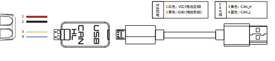
기본 어댑터가 아닌 전원을 쓰면 입력 전압은 26 V를 넘지 않아야 하고 전류는 10 A 이상이어야 합니다.
처음 전원 넣기
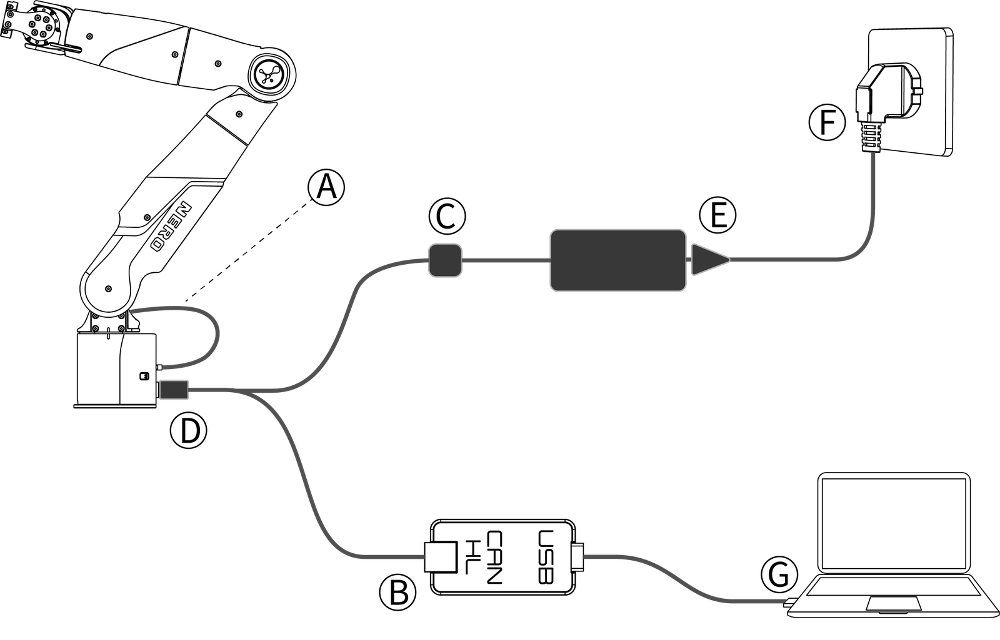
- CAN 케이블을 연결합니다.항공 커넥터의 CAN 케이블을 장치 B의 CAN_H와 CAN_L 단자에 각각 연결합니다.
- XT30 커넥터를 끼웁니다.장치 C의 XT30 오삽입 방지 커넥터를 방향에 맞춰 끼웁니다.
- 항공 커넥터를 끼웁니다.항공 커넥터 D의 빨간 점을 베이스 소켓의 빨간 점과 맞춰 끼웁니다.
- 어댑터 E를 콘센트에 연결합니다.
- 전원을 확인합니다.AC 플러그 F가 제대로 꽂혀 전원이 들어오는지 확인하고, 베이스 전기 패널의 표시등이 녹색으로 깜박일 때까지 기다립니다.
- USB 케이블 G를 컴퓨터에 연결합니다.이제 로봇팔을 쓸 수 있습니다.
DH 파라미터
| 관절 | ai−1 (m) | αi−1 (°) | di (m) | θi offset (°) |
|---|---|---|---|---|
| j1 | 0 | 0 | 0.138 | 0 |
| j2 | 0 | 90 | 0 | 180 |
| j3 | 0 | 90 | 0.31 | 180 |
| j4 | 0 | 90 | 0 | 180 |
| j5 | 0 | 90 | 0.27001 | 90 |
| j6 | 0 | 90 | 0 | 90 |
| j7 | 0 | 90 | 0.0235 | 0 |
로봇팔 접속
웹 제어 화면에는 로봇팔의 Wi-Fi 핫스팟이나 이더넷으로 접속합니다. 문서
Wi-Fi
| 항목 | 값 |
|---|---|
| Wi-Fi 이름 | agx-7ax-xx (xx는 로봇마다 다름) |
| Wi-Fi 비밀번호 | 12345678 |
| 웹 로그인 주소 | http://192.168.31.1/ |
| 웹 로그인 계정 | admin / 123456 |

공장 기본 비밀번호는 누구나 알 수 있습니다. 여러 사람이 있는 곳에서 쓰면 핫스팟 비밀번호를 바꾸십시오 (8장).
이더넷
이더넷 케이블의 한쪽 끝을 컨트롤러의 네트워크 포트에, 다른 쪽 끝을 컴퓨터나 LAN의 네트워크 포트에 연결합니다. 연결되면 이더넷 포트 표시등이 자주 깜박입니다.
로봇팔 컨트롤러의 기본 IP 주소는 10.90.0.150입니다. 연결된 모든 컴퓨터의 IP 주소가 컨트롤러와 같은 네트워크 대역에 있어야 통신할 수 있습니다.
웹 제어 화면
웹 제어 화면(Web-Based Host Computer)의 구성과 상단 기능 버튼을 설명합니다. 문서
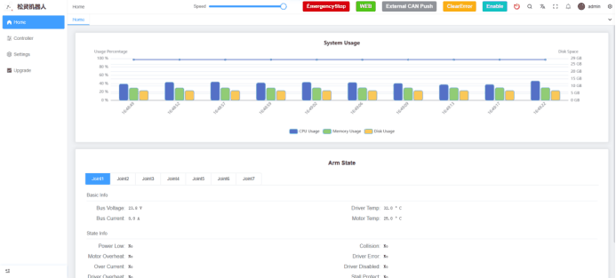
시스템 사용률
로봇팔에는 제어 보드가 내장되어 있습니다. 시스템 사용률에는 메인 보드의 디스크 · CPU · 메모리 점유율이 표시됩니다. 이 제어 보드는 사용자에게 개방되어 있지 않습니다.
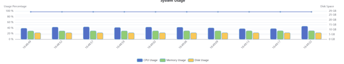
로봇팔 상태
로봇팔 각 관절 모터의 상태를 표시합니다.
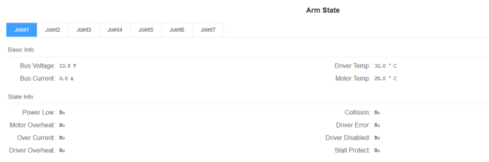
상단 기능 버튼
| 기능 | 버튼 | 설명 |
|---|---|---|
| 로봇팔 속도 |  | 버튼을 끌어 로봇팔의 이동 속도를 조절합니다. |
| 비상 정지 |  | 로봇팔의 움직임을 즉시 멈춥니다. |
| 웹 모드 | 웹 제어 모드로 바꿉니다. | |
| 오류 해제 |  | 로봇팔 관절의 오류 정보를 지웁니다. |
| 활성화 | 관절 하나 또는 모든 관절을 활성화합니다. | |
| 시스템 재시작 |  | 웹 운영 체제 전체를 재시작합니다. |
| 검색 | 검색 기능입니다. | |
| 중문 · 영문 전환 |  | 웹 제어 화면의 언어를 바꿉니다. |
| 전체 화면 | 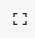 | 웹 페이지를 전체 화면으로 표시합니다. |
| 알림 |  | 알림 기능입니다. |
| 웹 설정 | 화면을 취향에 맞게 설정합니다. |
사용자 제어 영역
동작 제어 · 드래그 티칭 · 협업 제어 · 속도 · 궤적 · 영점 설정 · 시스템 설정을 설명합니다. 문서
동작 제어
| 모드 | 동작 | 참고 |
|---|---|---|
| Point | 엔드 이펙터 위치(x, y, z, rx, ry, rz)를 넣고 Apply를 누르면 그 위치로 움직입니다. x · y · z 아이콘으로 좌표를 늘리거나 줄인 뒤 Apply를 눌러도 됩니다. | 넣은 위치에 도달할 수 없으면 움직이지 않고 오류 알림이 뜹니다. |
| Circle | 시작점 · 중간점 · 끝점(각각 x, y, z, rx, ry, rz)을 넣으면 세 점으로 원호 동작을 계획해 실행합니다. | 넣은 위치나 계획된 원호에 도달할 수 없는 곳이 있으면 움직이지 않고 오류 알림이 뜹니다. |
| Joint | 관절 각도를 넣고 Apply를 누르면 실행됩니다. 슬라이더로 값을 바꿔도 되며, 이때도 Apply를 눌러야 적용됩니다. | 관절 제한을 넘는 각도는 실행되지 않습니다. 관절 제한 범위 안에서 명령하십시오. |
| Line | 위치와 자세(x, y, z, rx, ry, rz)를 넣으면 그 위치까지 직선으로 움직입니다. | 목표점이나 계획된 직선 경로에 도달할 수 없는 곳이 있으면 동작의 해를 구할 수 없습니다. |
| MIT | 대상 관절 번호를 고르고 관절 각도, 속도, kp(위치 이득), kd(속도 이득), 관절 토크를 넣습니다. | 관절 모터의 위치 · 속도 · 토크를 직접 제어합니다. 관련 파라미터(목표 속도 · kp · kd · 토크)를 조절해 위치 · 속도 · 토크를 섞어 제어할 수도 있습니다. 비교적 위험한 모드입니다. 쓰기 전에 기술 지원팀에 확인하십시오. |
웹 제어 화면으로 제어하다가 이 알림이 뜨면 웹 제어 모드가 아닌 것입니다. 화면 위쪽의 WEB 버튼을 눌러 웹 제어 모드로 바꾸십시오.
드래그 티칭
- 새 티칭 프로그램을 추가합니다.티칭 이름을 넣고 확인합니다.
- 조작 패널에서 Add를 누릅니다.로봇팔이 중력 보정 모드로 바뀌어 손으로 끌어 움직일 수 있습니다.
- 기록이 끝나면 Pause를 눌러 마칩니다.
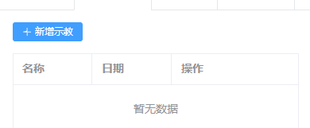
협업 제어 (리더 · 팔로워)
이 화면에서 로봇팔의 작동 모드를 정하고 바꿉니다.
normal: 독립 작동 모드입니다. 리더 · 팔로워 협업에 참여하지 않고 독립된 장치로 작동합니다.leader: 지금 제어하는 로봇팔을 리더 장치로 지정합니다. 리더 팔이 움직임을 주도하며 팔로워 팔을 구동합니다.follower: 지금 제어하는 로봇팔을 팔로워 장치로 지정합니다. 팔로워 팔은 리더 팔의 이동 명령을 실시간으로 따라가며 동기화된 움직임을 만듭니다.

두 로봇팔을 모두 팔로워 모드로 두지 말고, 두 팔이 연결된 상태에서 CAN 푸시를 동시에 켜지 마십시오. 그렇지 않으면 외부 네트워크 CAN 통신에 이상이 생기며, 이때는 장치를 다시 시작해야 합니다.
속도 조절
속도 조절 화면에서 슬라이더를 끌어 로봇팔 전체 속도를 백분율로 조절합니다.
궤적
궤적 관리는 로봇팔 운동 궤적의 생성 · 관리 · 실행 · 저장을 묶은 화면입니다. 여러 이동 지점(motion points)으로 이어진 경로를 계획하고, 저장하고, 불러오고, 일괄 처리할 수 있습니다.
| 버튼 | 설명 |
|---|---|
| New Trajectory | 새 빈 궤적을 만듭니다. |
| Refresh | 아래 궤적 목록을 새로 고쳐 최신 상태로 표시합니다. |
| Export | 고른 궤적 파일을 백업 · 공유용으로 PC에 내보냅니다. |
| Import | PC에 있는 궤적 파일을 불러옵니다. |
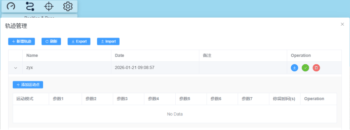
영점 설정
오래 쓰면 기계적 마모 같은 원인으로 관절의 영점이 어긋날 수 있습니다. 이때는 제어판의 영점 설정(Zero Point Setting)에서 관절의 영점을 다시 교정합니다. 수동과 자동 두 가지 방법이 있습니다.
- 자동 영점 설정: 관절을 고르고 Auto Set을 고른 뒤 Confirm을 누릅니다. 모터가 기계적 한계까지 갔다가 돌아오므로 로봇팔을 막지 마십시오 (2장).
- 수동 영점 설정: 관절을 고르고 Disable한 다음, 손으로 영점 위치까지 돌린 뒤 Confirm을 누릅니다.
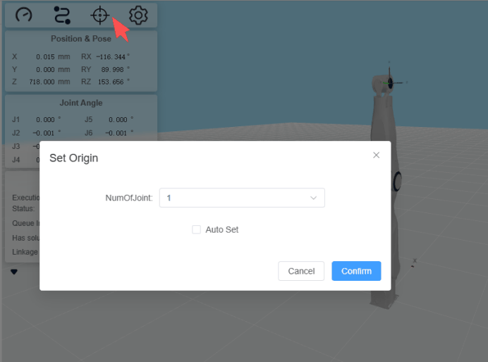

시스템 설정
관절 제한
실제 작업에 맞춰 각 관절의 동작 범위와 최대 허용 속도를 정합니다. 프로그램 오류 · 잘못된 조작 · 예상치 못한 간섭 때문에 로봇팔이 위험하게 움직여 충돌 · 과부하 · 손상이 생기는 것을 막습니다. 처음 값으로 되돌리려면 Reset을 누릅니다.
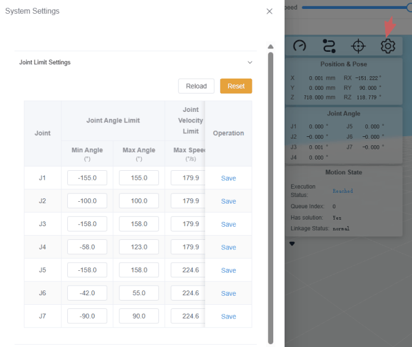
엔드 이펙터 속도
엔드 이펙터의 동작 성능을 세밀하게 맞추는 고급 설정입니다. 공정과 안전 요구 사항에 따라 엔드 이펙터 공구의 속도와 가속도 상한을 정합니다.
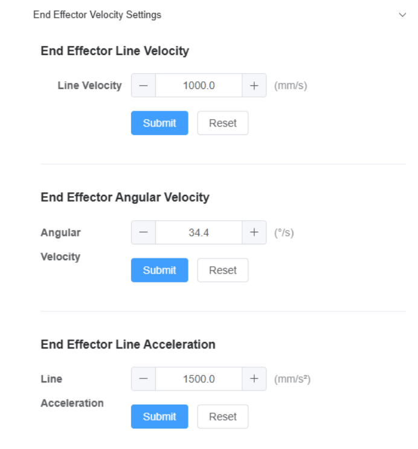

충돌 보호
각 관절이 충돌이나 비정상적인 저항에 반응하는 민감도를 정합니다. 뜻밖의 충돌이나 지나친 저항이 생기면 시스템이 바로 감지해 정한 수준에 따라 비상 정지하여, 사람을 보호하고 장비 손상을 막습니다.

설치 자세
로봇팔 몸체의 물리적 설치 자세를 정합니다. 이 설정은 좌표계 교정의 기본 단계이며, 동작 제어 논리와 공간 좌표 계산에 직접 영향을 줍니다. 실제 환경에 맞춰 수직 · 수평 · 천장(거꾸로) 설치 중에서 고릅니다.

엔드 이펙터 구성
끝에 단 공구의 물리 속성(질량 · 무게 중심 · 크기)을 정의합니다. 이 값으로 제어 시스템이 공구 파라미터를 정확히 계산해, 동작을 정밀하게 제어하고 토크를 보상합니다.

네트워크 설정
이더넷 포트와 Wi-Fi 핫스팟 설정을 설명합니다. 문서
이더넷 포트
네트워크 연결의 핵심 파라미터를 정합니다. 네트워크 프로토콜과 관련 파라미터를 직접 설정하면 장치가 네트워크에서 식별되고, 경로를 찾고, 도메인 이름을 해석할 수 있습니다. 그러면 장치가 대상 네트워크에 정상적으로 접속해 다른 장치나 서버와 통신할 수 있습니다.
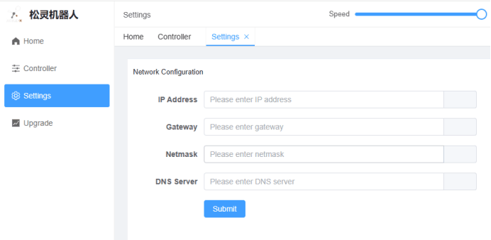
로봇팔의 IP 주소를 직접 정한 뒤 이더넷으로 컴퓨터와 연결합니다. 컴퓨터와 로봇팔이 같은 네트워크 대역에 있어야 통신할 수 있습니다.
핫스팟
로봇팔이 Wi-Fi 핫스팟으로 동작하는 데 필요한 기본 네트워크 파라미터를 정합니다. 그러면 모바일 기기 같은 다른 장치가 Wi-Fi로 로봇팔에 접속해 무선으로 데이터를 주고받고 로봇팔을 제어할 수 있습니다.

업그레이드
소프트웨어 버전 관리와 관절 모듈 펌웨어 업그레이드를 설명합니다. 문서
소프트웨어 업그레이드
로봇팔의 소프트웨어 버전 관리와 시스템 업그레이드 화면입니다. 이 화면에서 펌웨어 버전 조회 · 시스템 업데이트 · 소프트 재시작을 할 수 있습니다.
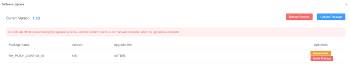
펌웨어 업그레이드
관절 모듈의 펌웨어를 업그레이드합니다. 관절 정보 확인과 관절 하드웨어 버전 조회도 지원해, 업그레이드를 안정적으로 하고 관절 모듈의 호환성을 확보합니다.
펌웨어를 업그레이드할 때는 먼저 Upgrade Mode를 눌러 업그레이드 모드로 들어간 뒤 관절 펌웨어를 업그레이드하십시오. 업그레이드 중에는 로봇팔이 Disable되므로 안전한 자세에 두십시오. 모든 관절 모듈의 업그레이드가 끝나면 반드시 Exit Upgrade를 누르십시오. 누르지 않으면 로봇팔을 쓸 수 없습니다.
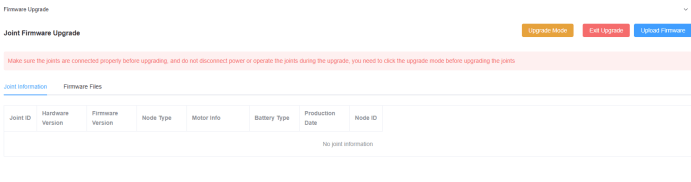
2차 개발과 CAN 프로토콜
2차 개발용 Python API와 CAN 프로토콜을 소개합니다. 자세한 내용은 AgileX GitHub를 보십시오. 문서
2차 개발
SDK를 쓰기 전에 웹 제어 화면에서 CAN 송신(CAN publishing)을 켜십시오.
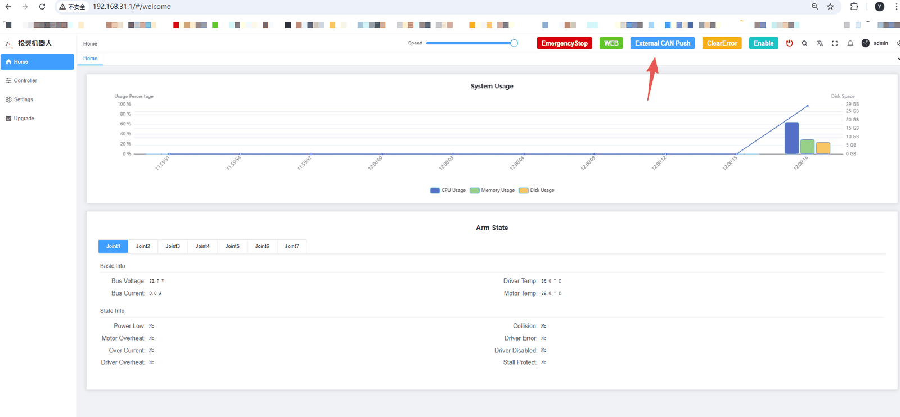
| 내용 | 주소 |
|---|---|
| SDK API 문서 | github.com/agilexrobotics/pyAgxArm |
CAN 프로토콜
로봇팔에는 개발용 CAN 인터페이스가 있어, 이 인터페이스로 명령을 보내 로봇팔을 제어할 수 있습니다. CAN 통신은 CAN 2.0B 표준을 따르고, 통신 속도는 1000 k이며, 메시지는 MOTOROLA(MSB) 형식입니다. CAN 명령으로 개발하려면 AgileX 기술 지원팀에 CAN 프로토콜 설명서를 요청하십시오.
유지 보수와 비상 대응
로봇팔이 오래 높은 성능을 유지하려면 정기적으로 정비해야 합니다. 모든 정비는 이 설명서의 지시를 엄격히 따라야 합니다. 문서
보관
쓴 뒤에는 영점 교정을 하고 전원을 끈 뒤 보관합니다. 배선을 정리해 엉키거나 지나치게 당겨지지 않게 합니다. 작동 · 보관 환경은 온도 −20 ~ 50 °C, 습도 25 ~ 85 %(결로 없음)입니다.
정비
정비는 로봇팔을 영점에 되돌리고 전원을 끈 상태에서 합니다. 전원을 끈 뒤 다음 작업을 합니다.
- 청소: 물티슈나 물에 살짝 적신 천으로 로봇팔의 먼지 · 때 · 기름을 닦습니다.
- 모터 점검: 모터와 구조 부품에 손상 · 변형이 없는지 봅니다.
- 케이블 점검: 전원 케이블과 CAN 케이블이 단단히 연결되었는지, 피복이 상하지 않았는지 봅니다.
비상 대응
비상 시에는 항공 커넥터를 직접 뽑아 전원을 끊을 수 있습니다. 웹 제어 화면에서는 EmergencyStop 버튼으로 움직임을 즉시 멈출 수 있습니다 (6장).
전원이 꺼지면 로봇팔이 비활성화되어 바로 떨어집니다. 로봇팔이 손상되거나 주변 환경 · 사람이 피해를 입지 않도록 각별히 주의하십시오. 커넥터를 뽑아 전원을 끊는 것은 비상 조치일 뿐이며, 부상을 막는 수단이 아닙니다.
치수 도면
AgileX 사용 설명서의 치수 도면입니다. 단위는 mm입니다. 문서

다관절 손을 단 로봇팔(정면 · 측면)과 다관절 손의 치수 도면은 AgileX NERO USER MANUAL 원문의 부록에 있습니다: agilexsupport.yuque.com
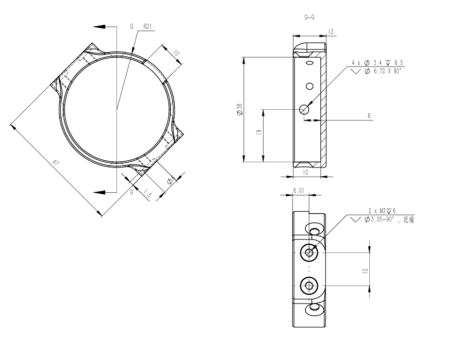